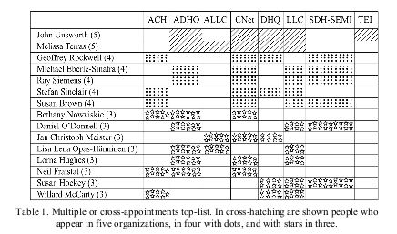

The true north strong and hegemonic: Or, why do Canadians seem to run DH
Posted: Mar 07, 2013 15:03;
Last Modified: Mar 08, 2013 10:03
Keywords:
In the Koln dialogues on the Digital Humanities, Domenico Fiormonte posted a provocative discussion of the Anglo-American character of much of the Digital Humanities scholarly infrastructure.
The bit that caused the most immediate stir—photos showed up on Twitter even while Domenico was speaking in Koln—was his chart of people holding multiple board and editorial positions in DH organisations:

This chart, Fiomonte argued, showed that International Digital Humanities consisted, in practice, of “a solid Anglo-American stem onto which several individuals of mostly European countries are grafted” (5). Looking at figures with multiple appointments across journals and organisations, he saw an equally strong representation of researchers working for Anglo-American institutions:
Table 1 aggregates data from… [major DH] organizations and shows the effect of multiple appointments, i.e. how committees and boards tend to replicate themselves, sometimes appointing the same people for up to five different organizations. These roughly collected data may be insufficient to demonstrate that current top DH organizations suffer from ethnocentrism, but they certainly point out a problem (5).
There are some things to quibble about in the way this particular table has been made up. The individual columns, for example, do not all represent independent organisations. ALLC, ACH, and SDH-SEMI, for example, are all constituent organisations (COs) of ADHO. On the whole this makes it highly likely that anybody in a leadership position at ADHO will also be on the board of at least one of the COs. DHQ and LLC, likewise, are journals published by ADHO and overseen, respectively, by the ACH and ALLC: once again, people on the editorial boards of one of these journals are likely to show up on the boards of at least one of ADHO, ACH, and/or ALLC. If the journal of SDH-SEMI, Digital Studies/Le champ numérique had been included, additional cross appointments would have appeared.
But these quibbles do not take away from Fiormonte’s larger point: that the main institutional organs of the Digital Humanities tend to draw on a relatively limited pool of people and many of these come from North America and Great Britain. As the ninth hegemon on Fiormonte’s list, I can attest to the fact that I have rarely joined a board in recent years on which I do not know a majority of the members from having served with them at other organisations—in many cases at the same time (the major exception to this is Global Outlook::Digital Humanities which has brought me into contact with many people I have never worked with before). And it is also true that many of the people on his list are found at Universities in North America and the United Kingdom (though I think in practice, there is a greater European presence than Fiormonte’s list suggests).
A closer look, however, reveals that this Anglo-American dominance is not evenly distributed: six of the first ten names on his list work at Canadian institutions. If we extent “Canadian” to include those who have worked in the past or been trained at Canadian institutions, the number rises to eight out of the fifteen people listed as being active in 3 or more organisations. Among those serving on four or more organisations, the density of Canadians becomes even more striking: of the 7 people who belong to this exclusive list of arch-hegemons, 5 work in Canadian institutions. In fact there are more Canadian-based francophone Digital Humanists among this group than either British or American Digital Humanists.
This seeming domination by Canadians is also partially an artifact of the evidence. Because Fiomonte’s table includes SDH-SEMI, the Canadian national scholarly society for the Digital Humanities, the hegemonic power held by the Canucks is exagerated neither the ACH nor the (perhaps especially) ALLC draw their boards exclusively from a single country, but most of the most internationally active Canadian DHers are also active in their national organisation, meaning their number is inflated by 1.
Once again, however, this quibble does not deract from the overall point: Canadians have always been disproportinately active in the Digital Humanities and often in leadership positions. High profile Humanities Computing projects and programmes were in place in Canadian institutions in the early 1970s and, despite its relatively small population, Canada continues to maintain an outsized profile in the contemporary Digital Humanities. Mel Terras’s infographic Quantifying the Digital Humanities for example, suggests that Canada has the third largest number of Digital Humanities Centres (11) after the United States (which had 44 centres at the time despite a population ten times as large) and Great Britain (which had a population twice as large as Canada’s but only 3 more centres).
Since the Digital Humanities is not a winter sport, it is not obvious why Canadian researchers and Canadian institutions should play such a prominent role in the Digital Humanities as it is practiced in High Income economies. Fiormonte’s point about the absence of linguistic barriers for researchers in North American and British Universities almost certainly offers a partial explanation. But I have also begun to wonder if there may not be systemic reasons as well: could it be that the university and funding systems in Canada rewards editorial, leadership, and infrastructure work in ways that those in the U.S. and U.K. do not?
In fact, I think the answer is that they do. Perhaps the most important thing is that Canada’s Post Secondary Education (PSE) sector appears to be structurally more amenable to rewarding infrastructure and organisational work. Because regulation of the post secondary sector is a matter of Provincial rather than Federal jurisdiction, there is no equivalent in Canada to the United Kingdom’s Research Assessment Exercise, with its emphasis on a relatively narrow set of standardised methods for measuring scholarly and scientific “output” and “impact.” While Canadian Universities are, like universities everywhere, required to demonstrate relevance and value to their funding authorities, they generally have a much closer relationship to their primary authorities (i.e. the provincial ministries of education) and belong to much smaller competitive pools (primarily the other universities in their province—though of course national comparisons are also made) for their primary finding. Senior University administrators often meet with deputy ministers (and indeed, the minister him/herself)—a process which allows more flexibility in explaining and measuring institutional success.
The American University system is as or more decentralised than the Canadian. Here, however, the difference seems to be attitudes towards tenure. Although the are Universities in Canada that have tenure requirements as stringent as those at the most elite american institutions (and success rates in both countries appear to be similar), my personal experience is that the actual requirements for tenure and promotion tend to be far more rigidly codified and conservative in the U.S. than in Canada. Many departments in the U.S. have explicit lists of specific types of required “output”; many of those that do not have explicit lists have fairly specific and well-understood implicit ones: a book and a book manuscript at the top schools, a book and some articles at mid-ranked schools, and so on.
Such lists—whether for tenure and promotion or “quality assurance” purposes—are rarely a good thing. They tend to be slow to adapt to changing technology (see here for an attempt to address this problem) and they force researchers into the production of certain types of “output” whether or not this is appropriate to the work they are doing. I don’t think I have visited a U.S. college campus in the last decade and not heard complaints from junior and mid-career faculty about the extent to which their research programmes are being forced in artificial and unwanted directions by the need to meet their department’s tenure or promotion requirements. While we tend now to think of the “crisis in scholarly publishing” as being largely one of new technologies and new, technologically-driven business models, it is worthwhile remembering that the term was being used fifteen to twenty years ago to describe the difficulty junior scholars were having getting the monographs which they were being forced to write in order to satisfy tenure requirements into print.
Although there are exceptions, both at the personal and institutional level, my experience is that Canadian academics are far less afraid of meeting tenure and promotion requirements and that Canadian departments are far more loath to establish lists of required outputs for such milestones. When I once mentioned on the mailing list of the Canadian chairs of English that I was considering establishing a series of informal benchmarks for evaluating faculty performance, the other chairs, including some from the country’s top research Universities, more-or-less unanimously advised against. While it was all right to have a very broad and informal sense of what a normal tenure or promotion case might look like, the chair of one prominent department told me, it was very important not to create a set written standard that might prevent you from making the best possible case to a dean for rewarding non-standard or unanticipated types of work.
It is this flexibility, coupled with funding rules that expect research grant applications to include substantial student involvement, that I suspect is what leads to the over-representation (in terms of population) of Canadians in international leadership positions in the Digital Humanities. Because their institutions are for the most part evaluated within a small pool of competitors and by funders who are in relatively close contact with the administration, Canadian universities are less restricted by the necessity of demonstrating achievement according to a narrow and relatively inflexible set of primarily bibliometric criteria. And because Canadian Universities (at least in English, in my experience) generally try to avoid establishing fixed lists of output-focussed requirements for tenure and promotion, Canadian researchers have both greater opportunity to take chances with their scholarly activity and use non-bibliometic evidence of impact—such as leadership positions in major infrastructure and research projects—in their activity reports.